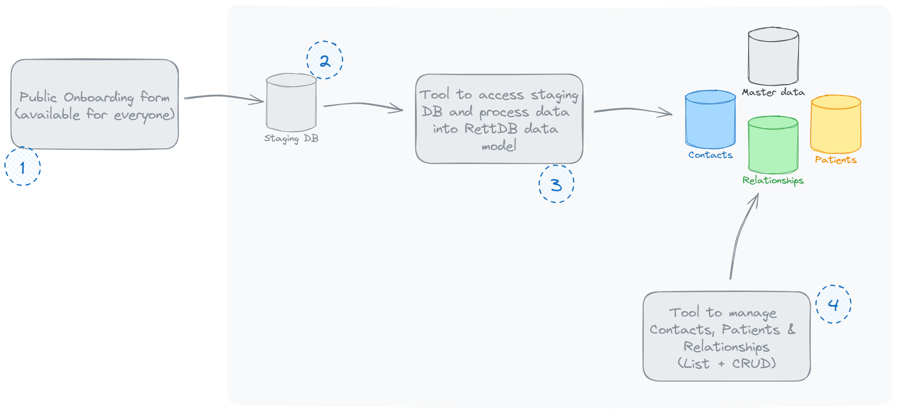
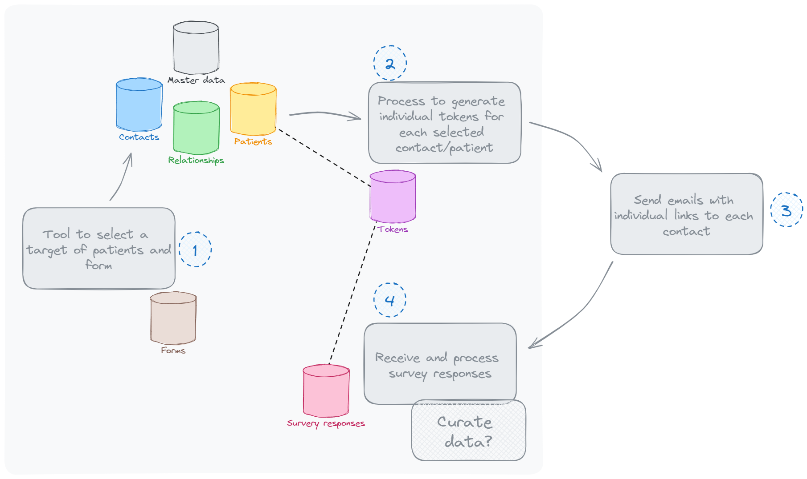

The Rett Syndrome Patient Registry is a system designed to collect, store, and manage data related to patients with Rett Syndrome. The system focuses on gathering essential contact, patient, and longitudinal data through various forms and surveys, ensuring secure and compliant data management.
The system provides administrators with tools to manage the data, while ensuring that contacts (legal guardians) can securely contribute relevant patient information. It is designed with GDPR compliance in mind, leveraging secure file handling and encryption protocols. The system integrates with the Microsoft ecosystem for user management and access control, providing a seamless experience for authorized personnel within the organization.
The onboarding form is publicly accessible and allows contacts (legal guardians) to register themselves and the patients under their care. No authentication is required to complete the form, and all submissions are stored in a staging database for review before final entry into the master database.
Fields Collected:
Data Flow: Submissions are first stored in the staging database and validated before being moved to the master database.

The staging database temporarily stores data from the onboarding form. Data must be validated (e.g., deduplication checks) before being moved to the master database, which contains the primary records for contacts, patients, and their relationships.
The master database contains all validated records of contacts, patients, and their relationships. Relationships define the connections between contacts (e.g., legal guardians) and patients (e.g., mother, father, legal guardian).
The backoffice application allows administrators to perform full CRUD operations on contacts, patients, and their relationships. It includes list views, search functionality, and allows for adding, updating, and deleting records.
The registry supports the collection of longitudinal data by allowing administrators to send surveys to contacts at different intervals. Each survey is linked to the corresponding patient through a secure, tokenized system, ensuring data integrity.

The system includes a secure file upload feature where legal guardians can upload files (e.g., genetic reports) using a private, token-based link. These files are securely stored and linked to the appropriate patient, ensuring GDPR compliance.
All user management is handled through the Microsoft 365 ecosystem, ensuring that only authorized personnel within the organization can access the system. The system uses Single Sign-On (SSO) and Role-Based Access Control (RBAC) for managing user permissions.
The system is fully compliant with GDPR regulations, ensuring that all personal and sensitive data is protected. Explicit consent is required from contacts when submitting data or uploading files. The system uses encryption for data both at rest and in transit.
The system integrates with reporting tools like PowerBI to allow administrators to generate detailed reports on patient demographics, mutation data, and longitudinal trends. All reports are anonymized to ensure privacy.